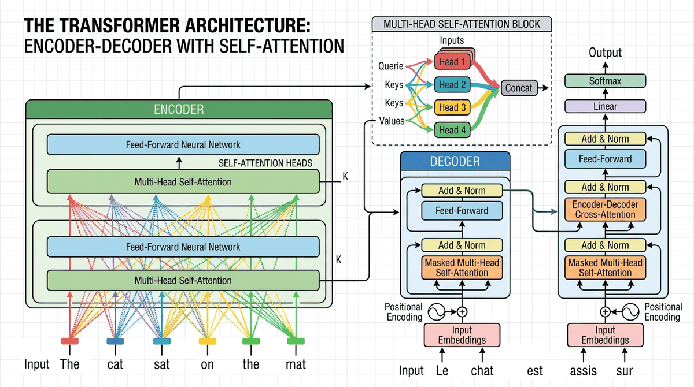

"Attention is all you need. Well, that and a few hundred billion parameters, a small country's worth of electricity, and a team of researchers who haven't slept since 2017."
Attn AI Agent

Chapter Overview
This is the central module of the entire book. The Transformer, introduced in the landmark 2017 paper "Attention Is All You Need," is the architecture behind every modern large language model. Building on the attention mechanisms introduced in Chapter 3, this chapter will dissect the Transformer layer by layer, build one from scratch, survey the many variants that have emerged since (explored further in Chapter 7: Modern LLM Landscape), understand the GPU hardware it runs on, and explore the theoretical limits of what Transformers can and cannot compute.
By the end of this module you will be able to read a Transformer implementation, modify it confidently, reason about its computational cost (a foundation for the inference optimization techniques in Chapter 8), and understand why certain architectural choices (positional encoding, layer normalization, residual connections) are not arbitrary but deeply principled.
Prerequisites
- Chapter 00: Comfortable with PyTorch tensors, autograd, and training loops
- Chapter 01: Familiarity with word embeddings, vector spaces, and similarity measures
- Chapter 02: Understanding of tokenization and vocabulary construction
- Chapter 03: Solid grasp of attention mechanisms (dot-product attention, multi-head attention, KV caches)
- Linear algebra: matrix multiplication, softmax, norms
Learning Objectives
- Walk through the original Transformer paper and explain every component from positional encodings to output probabilities
- Implement a complete decoder-only Transformer in ~300 lines of PyTorch (using skills from Chapter 0), training it on a small dataset
- Compare encoder-only, decoder-only, and encoder-decoder architectures with concrete use cases, preparing you for Chapter 6's pretraining discussion
- Explain efficient attention mechanisms (linear attention, sparse attention, FlashAttention) and their tradeoffs
- Describe State Space Models (SSMs/Mamba), Mixture-of-Experts (MoE), RWKV, Gated Attention, and Multi-head Latent Attention
- Understand GPU architecture (SMs, memory hierarchy, bandwidth) and write a basic Triton kernel
- State the universal approximation and computational complexity results for Transformers, and explain how chain-of-thought reasoning (a concept revisited in Chapter 17: Interpretability) extends their power
Sections
- 4.1 Transformer Architecture Deep Dive 🔴 📐 Paper walkthrough, positional encoding (sinusoidal and learned), feed-forward networks, layer normalization (Pre-LN vs Post-LN), weight initialization, residual connections, information flow, and the complete forward pass. Understanding these layers is essential for PEFT methods like LoRA (Chapter 14) that target specific components.
- 4.2 Build a Transformer from Scratch 🔴 🧪 Implement a complete decoder-only Transformer (~300 lines of PyTorch). Covers token embeddings (building on Chapter 1's embedding foundations), causal masking, multi-head attention, feed-forward blocks, and a training loop on a character-level language modeling task.
- 4.3 Transformer Variants & Efficiency 🔴 🌍 Encoder-only (BERT), decoder-only (GPT), encoder-decoder (T5), with variants revisited in Chapter 7. Efficient attention (linear, sparse, FlashAttention). State Space Models (Mamba), RWKV, Mixture-of-Experts, Gated Attention, Multi-head Latent Attention (MLA).
- 4.4 GPU Fundamentals & Systems 🟡 🧪 Streaming multiprocessors, memory hierarchy (registers, shared memory, HBM), roofline model, FlashAttention algorithm, Triton programming, and a lab implementing a fused softmax kernel.
- 4.5 Transformer Expressiveness Theory 🟠 🔬 Universal approximation for sequence-to-sequence functions, Transformers as computational models (TC0, log-precision), limitations on inherently serial problems, and how chain-of-thought reasoning extends computational power.
What's Next?
In the next section, Section 4.1: Transformer Architecture Deep Dive, we take a deep dive into the complete Transformer architecture, examining how each component contributes to the whole.